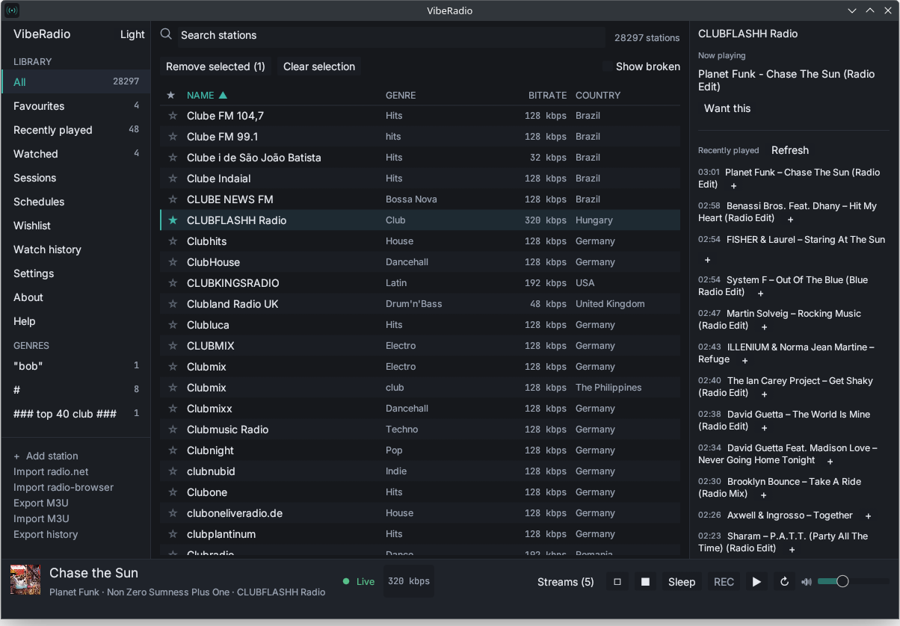
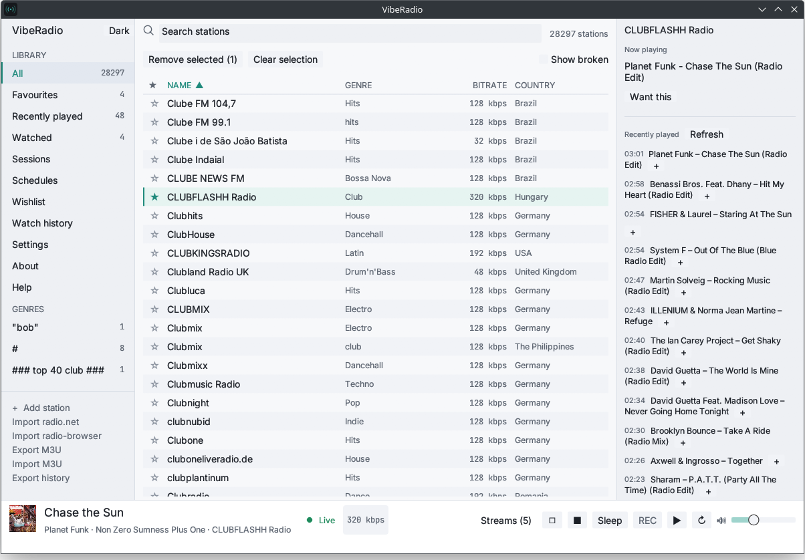

Native, not a browser
Written in Rust with egui. No WebView, no Electron, no account. It starts instantly and stays light.
A native internet-radio player that records songs, identifies them, and builds a clean music library — with wishlists and watched stations that catch the track you almost missed.

A Rust core and an egui interface, with no browser engine in the middle. Everything stays on your machine.
Written in Rust with egui. No WebView, no Electron, no account. It starts instantly and stays light.
Split recordings per track, name them from a template, and set a minimum length so ads and chatter are dropped.
Chromaprint and AcoustID identify complete airings and file them under artist and album, ready for any player.
Add the songs you want. VibeRadio watches your stations and records a wish when it airs.
Keep a rolling buffer on selected stations, so a song that starts just before you notice is still caught from the beginning.
ICY, HLS and Ogg Opus, plus AAC-LC, MP3, Vorbis, FLAC and WAV. Encrypted HLS is reported clearly.
One window for playback, recording, the verified library and the wishlist — with a compact mini player and a tray icon.

Download a build from the releases page. Linux also has a Flatpak manifest in the repository.
The AppImage is one file and needs no install. The tarball includes the desktop entry, icon and AppStream metadata.
chmod +x viberadio-*.AppImage
./viberadio-*.AppImage
Unzip and run viberadio.exe. SmartScreen may warn
about an unsigned build; choose More info → Run anyway.
Extract the tarball and run the binary. Clear the quarantine flag if macOS refuses to open it.
xattr -d com.apple.quarantine viberadioVibeRadio is MIT licensed and has no accounts, ads or telemetry. If it earns a place in your day, you can support development on Ko-fi.